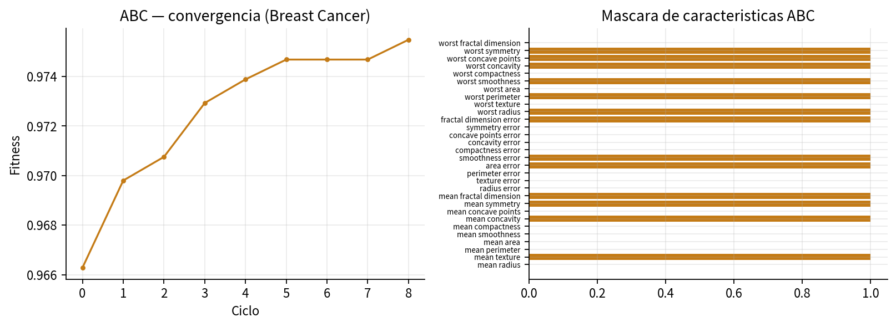
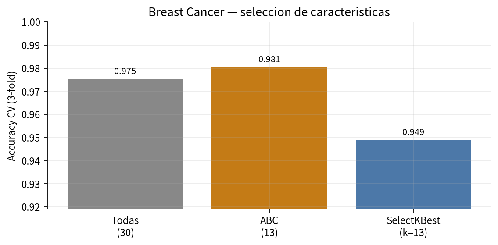

El primer problema consiste en elegir un subconjunto de variables para un clasificador. El espacio es combinatorio. ABC explora máscaras binarias; SelectKBest aporta un control univariado a igual cardinalidad.

Bits activos al término de ocho ciclos.

El filtro univariado no replica el subconjunto del wrapper.
Vector binario de dimensión d. El bit j indica si la variable j entra al clasificador. Wrapper: cada evaluación reentrena una regresión logística con validación cruzada estratificada de 3 pliegues.
f = Acc_CV − λ · (k / d), con λ = 0.012. El segundo término evita la solución trivial de usar las 30 variables.
Baseline univariado a cardinalidad emparejada (k = 13). Contrasta relevancia individual frente a relevancia conjunta. No es una muestra aleatoria.
| Método | Variables | Accuracy CV |
|---|---|---|
| Todas | 30 | 0.975 |
| ABC | 13 | 0.981 |
| SelectKBest (ANOVA) | 13 | 0.949 |